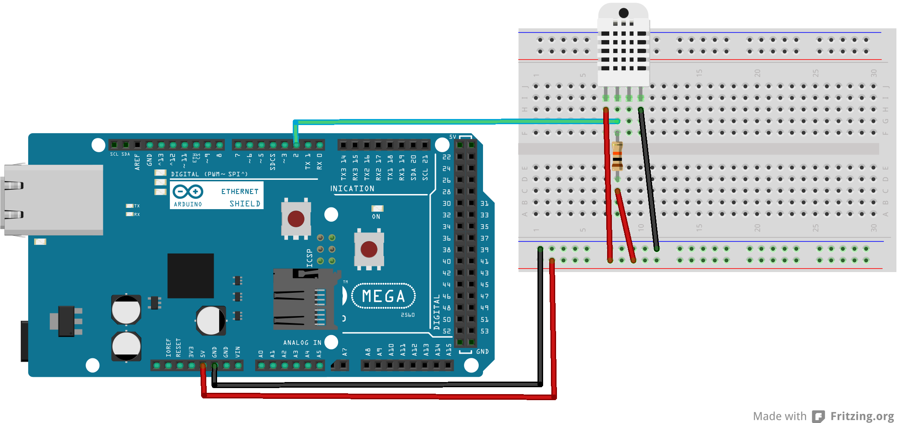

Developer
You can develop for the steward, clients and things.
Developing for the steward
If you need to add a support for a consumer equipment talking some kind of industry, or manufacturer-specific protocol, which the steward terms a native protocol. Then you'll need to understand how the steward handles devices. New devices speaking native protocols (rather than Simple Thing Protocol or Thing Sensor Reporting Protocol (TSRP) can be added to the steward by creating a module with a path and name that conform to the Device Taxonomy. This module is detected and loaded by the steward during startup.

Developing clients
Building clients which talk to the steward is pretty simple using Websockets. The steward provides two main API endpoints accessible using secure web socket protocol on port 8888, advertising this service via zero-configuration networking (mDNS).
Using these two end points you can both monitor what is happening with your things — for instance changes in the weather or your front door opening — or send commands to perform actions, for instance to turn all the lights in your house on or off.
Developing things
Developing simple things which talk to the steward can be done in two ways. Either using the bi-directionally using the websocket based Simple Thing Protocol to provide control, or if you need to report readings only using the much simpler multicast UDP based Thing Sensor Reporting Protocol (TSRP).
